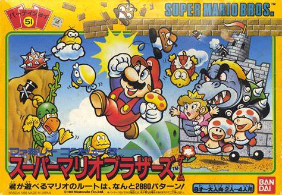
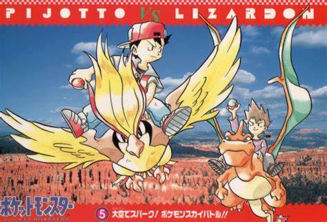
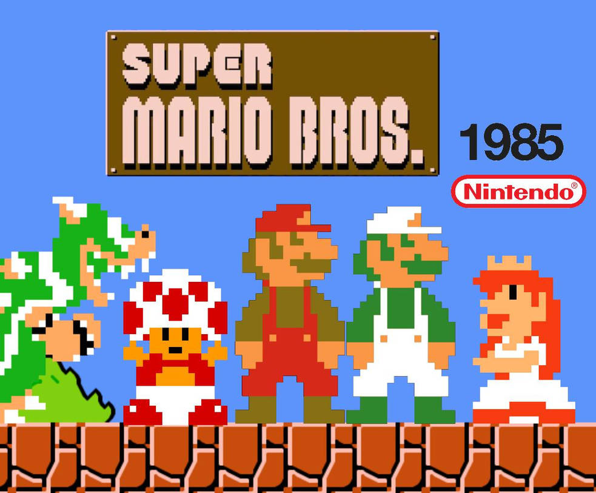
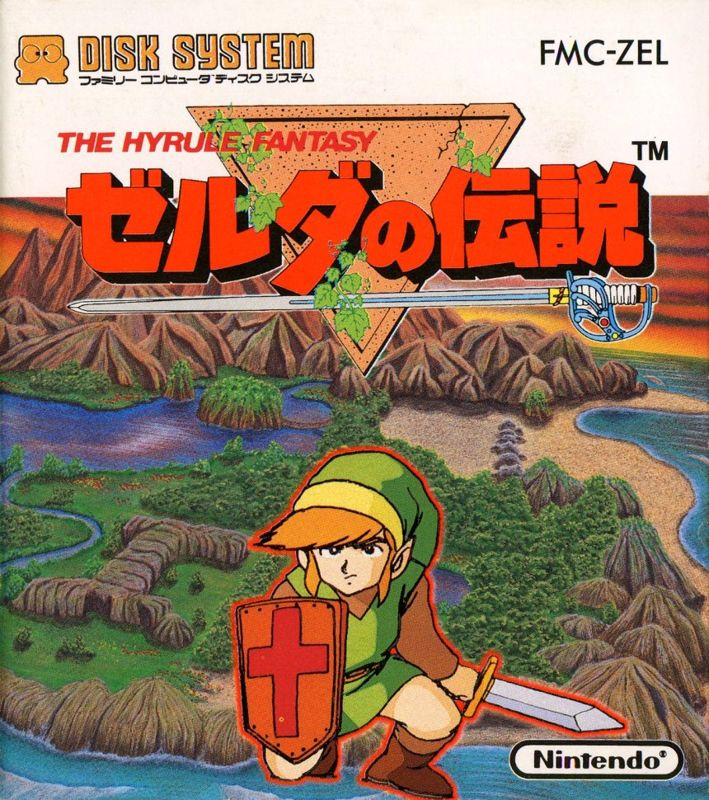
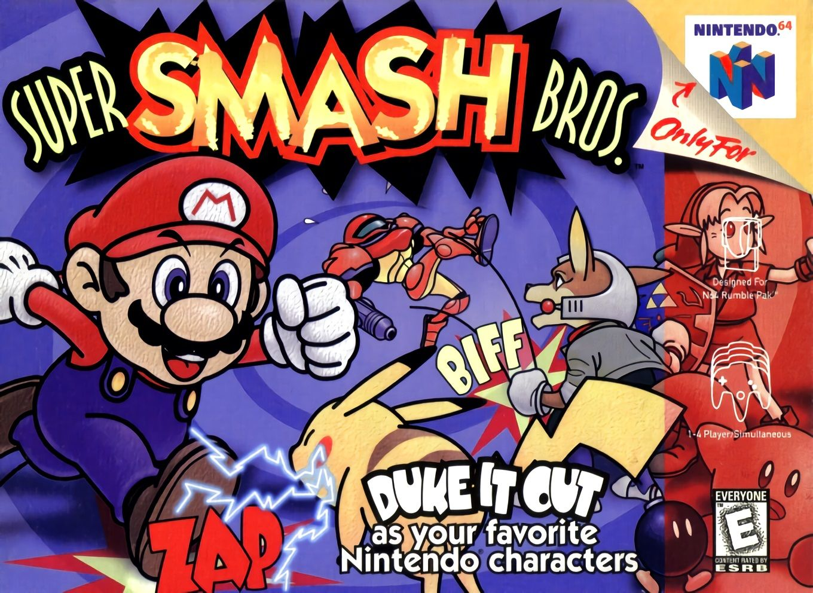

Super Mario Bros
O jogo que revolucionou os jogos de plataforma

The Legend of Zelda
Uma das franquias mais icônicas da Nintendo

Pokémon
A franquia que conquistou o mundo

O jogo que revolucionou os jogos de plataforma
Uma das franquias mais icônicas da Nintendo

A franquia que conquistou o mundo
Fundada em 1889 por Fusajiro Yamauchi em Kyoto, Japão, a Nintendo começou sua jornada como uma empresa de cartas de baralho artesanais chamadas "Hanafuda". Por décadas, a Nintendo foi uma das principais fabricantes de cartas do Japão, mas a visão de seus líderes sempre foi mais ampla.
Nos anos 1960, sob a liderança de Hiroshi Yamauchi, neto do fundador, a Nintendo começou a diversificar seus negócios, experimentando com diferentes produtos, desde brinquedos até hotéis de amor. Foi apenas nos anos 1970 que a empresa encontrou seu verdadeiro caminho ao entrar no mercado de videogames.
Em 1981, a Nintendo lançou "Donkey Kong", criado por Shigeru Miyamoto, que introduziu ao mundo dois personagens que se tornariam ícones: Mario (originalmente chamado de Jumpman) e Donkey Kong. Este foi o primeiro grande sucesso da Nintendo no mercado de arcades.
Em 1983, a Nintendo lançou o Nintendo Entertainment System (NES) no Japão, e em 1985 nos Estados Unidos. Este console não apenas salvou a indústria de videogames da crise de 1983, mas também estabeleceu novos padrões de qualidade e inovação. Jogos como "Super Mario Bros." e "The Legend of Zelda" redefiniram o que era possível em um videogame.
Ao longo dos anos, a Nintendo continuou a inovar com consoles revolucionários como o Game Boy (1989), o primeiro console portátil com cartuchos intercambiáveis; o Nintendo 64 (1996), que introduziu o analógico 3D; o Wii (2006), que popularizou o controle por movimento; e o Nintendo Switch (2017), que uniu o melhor dos mundos portátil e console.
Hoje, a Nintendo continua sendo uma das empresas mais influentes e inovadoras da indústria de jogos. Com franquias icônicas como Mario, Zelda, Pokémon, Metroid e muitas outras, a Nintendo não apenas criou jogos memoráveis, mas também moldou a infância de gerações e continua a inspirar novos jogadores ao redor do mundo.

O jogo que definiu os jogos de plataforma e salvou a indústria dos videogames. Mario e Luigi precisam resgatar a Princesa Peach das garras do Bowser. Jogue agora de graça!
Saiba mais
O primeiro jogo da série que introduziu Link e a Princesa Zelda. Um RPG de ação que revolucionou o gênero com sua exploração não-linear. Jogue agora de graça!
Saiba mais
O início da franquia Pokémon que conquistou o mundo. Capture, treine e batalhe com criaturas únicas em uma jornada para se tornar um Mestre Pokémon. Jogue agora de graça!
Saiba mais
Um jogo de luta que reúne os maiores personagens da Nintendo. Uma franquia que continua a crescer e encantar fãs até hoje. Jogue agora de graça!
Saiba mais
Um simulador de vida que conquistou milhões de jogadores. Crie sua própria vila, faça amigos e viva uma vida pacífica com os animais. Jogue agora de graça!
Saiba mais
Uma nova franquia que trouxe inovação aos jogos de tiro. Controle personagens que podem se transformar em lulas e pintar o cenário.
Ainda não disponível